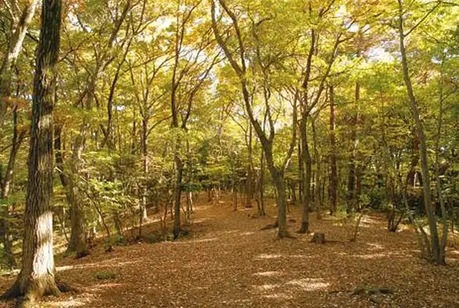
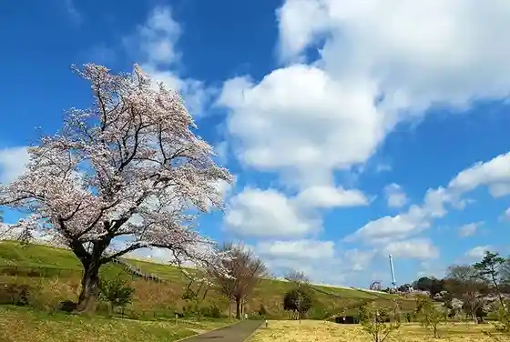
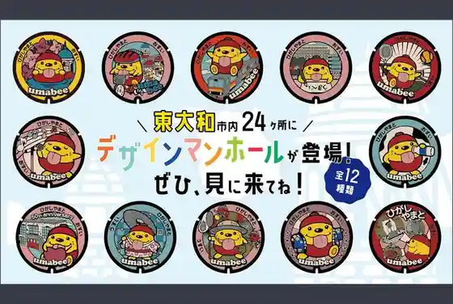
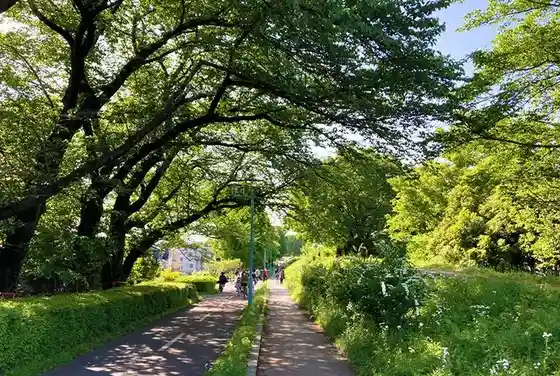

Japan / Tokyo / Higashiyamato
Higashiyamato · Tokyo
Higashiyamato
Highlighted on the Tokyo map.

Higashiyamato City Hall
Higashiyamato Park
Higashiyamato, Tokyo · Official / source link
Sayama Park

Higashiyamato Kanko Kyarakuta (Umabe) no Dezainmanhoru Futa

Yugengaisha Daiwa Kisho
Toritsu Sayama Sakai Greenway

Higashiyamato Minami Park
← Higashimurayama · All towns in Tokyo · Hino →
Other towns: Adachi · Akiruno · Akishima · Aogashima · Arakawa · Bunkyo · Chiyodaku · Chofu · Chuoku · Edogawa · Fuchushi · Fussa · Hachijo · Hachioji · Hamura · Higashikurume · Higashimurayama · Hino · Hinode · Hinohara · Inagi · Itabashi · Okutama · Katsushika · Kitaku · Kiyose · Kodaira · Koganei · Kokubunji · Komae · Koto · Kozushima · Kunitachi · Machida · Meguro · Mikurajima · Minatoku · Mitaka · Miyakemura · Mizuho · Musashimurayama · Musashino · Nakano · Nerima · Niijima · Nishitokyo · Ogasawara · Ome · Oshima · Otaku · Setagaya · Shibuya · Shinagawa · Shinjuku · Suginami · Sumida · Tachikawa · Taito · Tama · Toshimaku · Toshimamura
Back to all prefectures